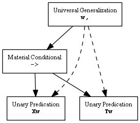
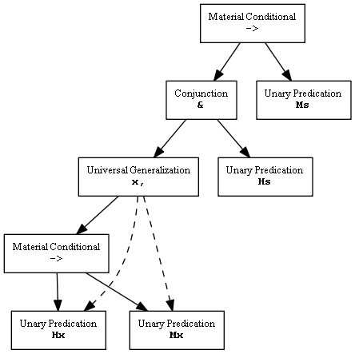

This web application (hereinafter referred to as "the software" or "application") decides the validity/satisfiablity/inconsistency of certain kinds of simple statements in symbolic logic.
Most of the software is written in C# and translated into JavaScript with Saltarelle. The source code is on GitHub. Viz.js is used to generate diagrams. The truth table feature is adapted from code written by Michael Rieppel.
To use this application, type a logical statement into the textbox on the main page, then click the "Decide" button. If the application can decide the statement, it will. Otherwise, it will show some kind of error message describing what went wrong. The language section explains how to write logical statements for this application. If you're looking for examples of statements, click on any of the buttons under the heading entitled "Examples" and the application will fill the text box with an example statement, ready to be decided.
If you click "Depict" button, the application will draw a diagram that shows how the application interprets the statement in the textbox. This diagram is a graphical representation of the data structure that the application actually uses to decide the statement.
If there is a syntactically valid propositional logic statement in the textbox, the "Truth Table" button will be enabled. Clicking this button will cause the application to draw a truth table for the statement.
Clicking the "Counterexample" button will cause the application to attempt to find a kind of world where the statement is false. If it succeeds, it will show a description of that kind of world.
The language has these elements:
The logical operators recognized by the software are:
| Operator | Symbol | Description |
|---|---|---|
| negation | ~ | Logical NOT |
| conjunction | & | Logical AND |
| disjunction | | | Logical OR |
| material conditional | -> | if … then … |
| biconditional | <=> | Logical equivalence |
| joint denial | ! | Logical NOR |
| exclusive disjunction | ^ | Logical XOR |
| strict implication | -< | necessarily if … then … |
The binary logical operators all are left-associative and have the following precedences:
| Precedence | Operators |
|---|---|
| highest | &, ! |
| … | | |
| … | ->, -< |
| lowest | <=>, ^ |
For example,
A|B&C->D
is interpreted the same way as
(A|(B&C))->D
Negation is right-associative and has higher precedence than any of the binary operators, so
~P & ~Q
is interpreted the same way as
(~P) & (~Q)
Variables are single lowercase letters that represent some object. Each variable is bound by a quantifier. Any single lowercase letter not bound by a quantifier will be interpreted as a constant.
Constants, like variables, are single lowercase letters that represent some fixed object. Any single lowercase letter that is not bound by a quantifier will be interpreted as a constant. I think that constants in a symbolic logic are strictly unnecessary. This argument:
Hx->Mx // All men are mortal. Hs // Socrates is a man. -> // Therefore Ms // Socrates is mortal.
could also be represented without constants as
Hx->Mx // All men are mortal. (3x,Sx) & ([]x,Sx->y,Sy->x=y) & x,Sx->Hx // Socrates is a man. -> // Therefore x,Sx->Mx // Socrates is mortal.
which, though more complicated, is in a way better because it makes explicit what we typically assume about Socrates, which is that he exists and he is, by definition, a unique individual. Even so, I think constants are too convenient a feature to be omitted from the software. The use of a constant implies that the object denoted by the constant actually exists. This isn't the only way to interpret constants, but it's the easiest one to implement in this software. Because of this interpretation, the software will decide that 3x,x=g is necessarily true. Possible objects (ones which may or may not exist) and impossible objects (ones which could never exist), can be represented with unary predicates.
Since I have not yet found a satsfactory way to decide statements which contain both modal operators and constants, the software rejects any statement that contains both modal operators and constants.
A predicate on zero variables, which can be thought of as representing a true/false proposition, is represented by a single capital letter.
A predication on one variable, which can be thought of as the assertion that an object has some property, is represented by a single capital letter (the predicate) followed by a single lowercase letter (the variable). You can use the same capital letter as a predicate over one variable and as a predicate over zero variables in the same statement and the software will treat them as distinct predicates, for example
x,Fx->F
will be interpreted in the same way as
x,Fx->P
because the first "F" is interpreted as a unary predicate and the second "F" is interpreted as a nullary predicate.
Expressions can be grouped together with parentheses. They work just like parentheses do in algebra or in other symbolic logics.
A universal generalization is a variable followed by a comma followed by the expression the generalization applies to. So you could type
x,Ax
to mean "everything is awesome". The generalization will apply to everything in the expression that follows the comma, up until an enclosing parenthesis or the end of the line of text that the generalization is on. So
x,Fx & y,Jy
is a generalization over
Fx & y,Jy
and not just a generalization over Fx. I recommend adding parentheses to make things clear, like
(x, Fx & (y,Jy))
A variable is always bound to the nearest enclosing generalization, so for
x, (x,F->Px) & Jx
the x in Px is bound to the second universal generalization and the x in Jx is bound to the first universal generalization.
An existential quantification is a "3" followed by a variable followed by a comma followed by the expression that the quantification applies to. For example,
3x, Fx & Bx
Could mean "There is a fountain filled with blood". The same rules for applicability and binding of variables that apply to universal generalizations also apply to existential quantifications.
A definite description is a "1" followed by a variable followed by a comma followed by an expression that is supposed to describe exactly one object. For example,
1x,Rx
Could mean "there is only one Roy Orbison"
An identification of two variables is just a lowercase letter followed by an equals sign followed by another lowercase letter, for example
x,y, (Fx & x=y) -> Fy
is a statement where "x=y" means x is the same object as y.
The software recognizes two modal operators, "[]" for necessity and "<>" for possibility. They are right-associative and have the same precedence as negation.
The software recognizes the two-term propositions of what is variously called "term", "Aristotelian" or "traditional" logic. It treats two-term propositions as shorthand statements of unary predicate logic. They are a capital letter representing the subject term, followed by a lower-case letter representing the proposition's form, followed by a capital letter representing the predicate term.
| Symbol | Proposition | Definition |
|---|---|---|
| SaP | All S are P | (x,Sx->Px)&(3x,Sx) |
| SeP | No S are P | x,Sx->~Px |
| SiP | Some S is P | 3x,Sx&Px |
| SoP | Not all S are P | (3x,Sx&~Px)|(~3x,Sx) |
| SuP | Either all S are P or no S are P | (x,Sx->Px)|(x,Sx->~Px) |
| SyP | Some S are P and some S are not P | (3x,Sx&Px)&(3x,Sx&~Px) |
In order to make the traditional Square of Opposition hold true, the A-form proposition is given existential import and the O-form proposition is denied existential import, per what was argued by Terence Parsons. It also recognizes the U-form and Y-form of the Hexagon of Opposition.
Either term in a proposition can be negated by adding the "~" symbol, for instance, "~Aa~B" will be interpreted as "all non-A are non-B". A "~" at the front of the expression attaches to the first term and not to the whole expression, so "~Aa~B" is interpreted the same way as "(~Aa~B)" and not the same as "~(Aa~B)".
The language includes a means to make some simple assertions of number. I added them to the language just for convenience; they sometimes help when codifying the logic in certain logic puzzles. They don't belong to any symbolic logic that I know of.
A nonnegative integer n followed by a single capital letter Pis an assertion that exactly n objects have the property P.
A nonnegative integer n followed by more than one capital letter P, Q, … is an assertion that exactly n of the propositions P, Q, … are true.
| Example | Meaning |
|---|---|
| 0P | No objects are P |
| 1P | Exactly 1 object is P |
| 2P | Exactly 2 objects are P |
| 0PQR | None of P, Q and R are true |
| 1PQR | Only one of P, Q and R is true |
| 2PQR | Exactly 2 of P, Q and R are true |
A valid expression in this language is just a true/false statement. It may be a single line, like
P&Q->R
or it may be multiple lines, like
Hx->Mx Hs -> Ms
If it is a single line, the software interprets that line as a statement and decides whether it is valid, satisfiable, or self-contradictory. If it is multiple lines, the software joins those lines to be a single expression and decides that statement. The software treats each line that is a statement as if it were conjoined to the other lines that are statements with a logical AND. This enables you to spread a long statement across multiple lines. For example,
P->Q Q->R P
is interpreted the same way as
(P->Q)&(Q->R)&P
If an expression has several lines and exactly one of them is a single binary logical operator, the software will join the lines before the operator with a logical AND, join the lines after the operator with a logical AND, and then join these two conjuncts with the single logical operator. For example,
Hx->Mx Hs -> Ms
is interpreted the same way as
( (Hx->Mx) & Hs ) -> (Ms)
This enables you to express a logical argument - one with several premises and a conclusion - in a familiar way.
Tabs, spaces and empty lines are always ignored. You could type this:
((A |B|C)->J )<=>x,F x& y,Ix
or this:
( (A | B |C )->J)<=> x ,Fx&y,I x
and expect the same result. Whitespace can be used to make expressions easier to read. But would probably want to type this instead:
((A|B|C) -> J ) <=> x, Fx & y,Ix
because it's easier to read.
A "//" and anything following it on a line is ignored by the software. This enables you to add helpful comments to expressions, like
Hx->Mx // All men are mortal. Hs // Socrates is a man. -> // Therefore Ms // Socrates is mortal.
The language this tool uses is a kind of symbolic logic. It was designed with these criteria in mind:
When the software is decides a proposition, it does not operate on symbolic statements. It operates on a tree-like data structure that is meant to represent the proposition. In this "tree", each node is an element in the proposition (a predicate, a variable, a quantifier, etc.) and each edge is a dependency between an element and its subordinate elements (e.g. a logical AND is a node with edges pointing to the two elements on either side of it).
The first step the software takes is to read the text given to it and attempt to convert it to a "tree". If it succeeds, the text is a well-formed statement within the software's symbolic language and the software can decide the tree. There is more than one way this parsing could be done, so the details are not important, as long as the resulting tree is correct.
The exact choice of language isn't important to the decision process, either. So long as a language only represents logical elements that are supported by the software and the language does not allow any logical element to depend on itself, directly or indirectly (e.g. no Liar's Paradoxes), that language could replace the language that is recognized by this software and the decision algorithm would work the same way.
For certain elements which can be defined in terms of other elements, the software makes substitutions:
| Element | Replacement | |
|---|---|---|
| 3x,... | existential quantification | (~x,~...) |
| 1x,... | definite description | (3y,x, x=y <=> ...) |
| <>... | possibility | (~[]~...) |
| ...^... | exclusive disjunction | ~(...<=>...) |
It might be helpful to show some symbolic statements and what their corresponding trees look like. For the statement w,Xw->Tw, which might be interpreted as "all my exes live in Texas", the software creates a tree like this:
The elements of the statement are all there: a universal generalization, a material implication beneath it, and two predications beneath that. The whole declares a logical relationship between being George Strait's ex and living in Texas.
More complicated statements have more complicated trees. For the syllogism
x,Hx->Mx // All men are mortal; Hs // Socrates is a man; -> // therefore Ms // Socrates is mortal.
the software creates this tree:
The argument has been converted to a single proposition; the software will decide whether or not the argument is valid by deciding whether or not this proposition is necessarily true.
The software operates on trees like the ones described above. To decide a proposition, for each kind of world, and sometimes for each kind of world in each interpretation, the software determines whether the proposition represented by the tree is true or false. If is is found to be true in each kind of world, it is decided to be necessary. If it is found to be false in each kind of world, it is decided to be impossible. If it is found to be true in some kind of world and false in another, it is decided to be contingent. The software works from the top down. Each node in the tree is evaluated by evaluating its subordinate nodes; they in turn are evaluated by evaluating their subordinate nodes. The procedure for evaluating a node depends on what kind of logical element it represents; each logical element has its own procedure. The following sections define procedures followed for each logical element.
If the proposition does not contain any modalities or constants, the proposition is decided by evaluating the tree for each kind of world. This effectively tests the proposition in every possible world, and therefore is sufficient to decide whether the proposition is necessarily true, contingent, or impossible.
If the proposition contains constants, the proposition is decided by deciding two other propositions. The first proposition is formed by binding all constants in the original proposition with universal generalizations. If this proposition is true, then the original proposition is necessarily true. The second proposition is formed by binding all constants in the original proposition with existential quantifiers. If this proposition is impossible, then the original proposition is impossible. In all other cases, the original proposition is contingent.
If the proposition contains modalities (possibility, necessity), the proposition can't simply be decided by evaluating it under every kind of world. If this were done, it would have the effect of treating each nullary predicate as if it were a contingent proposition, and every kind of object as a contingent kind of object. It would have the effect of making the software decide modalities in unexpected ways. For instance, the software would decide that []P->~P is necessarily true, since P here would be assumed always to be a contingent proposition, and therefore never necessarily true. Instead, the software evaluates the proposition under every interpretation. If it is true for every kind of world under every interpretation, then the proposition is necessarily true.
The obvious way to evaluate a universal generalization is to instantiate its variable with each object in the world and evaluate each of the resulting propositions; if all instantiations are true, the generalization is true; if any are false, the generalization is false. The problem with this approach is that a world may have an infinite number of objects in it, so evaluation in a finite amount of time may not be possible. The software does not try to do this. It takes a different, but similar approach.
Suppose all of the objects in a world can be grouped into a finite number of kinds. Suppose further that these kinds are defined in such a way that, if a universal generalization is instantiated with any object of a kind, the resulting proposition is logically equivalent to the proposition that would result from an instantiation with any other object of the same kind. If all that is true, then the universalization is decidable. And all that is true. The logical elements supported by the software allow for possible worlds to be grouped this way (how this grouping is done is defined elsewhere). To evaluate a universal generalization, the software instantiates the universal generalization with each kind of object until all kinds of object have been tried or until one instantiation is found to be false. If all instantiations are true, the universal generalization is true, if any instantiations are false, the universal generalization is false.
To evaluate a conjunction, the software evaluates the conjoined propositions. If both are true, the conjunction is true. If either is false, the conjunction is false.
To evaluate a disjunction, the software evaluates the disjoined propositions. If both are false, the disjunction is false. If either is true, the disjunction is true.
To evaluate a negation, the software evaluates the negated proposition. If it is true, the negation is false. If it is false, the negation is true.
To evaluate a material conditional, the software evaluates its antecedent and its consequent. If the antecedent is true and the consequent is false, then the material conditional is false. In all other cases, the material conditional is true.
To evaluate an equivalence, the software evaluates both sides of the equivalence. If they have the same truth value, the equivalence is true. If they have different truth values, the equivalence is false.
To evaluate a joint denial, the software evaluates the denied propositions. If they are both false, the joint denial is true. If either are true, the joint denial is false.
The software replaces all other logical elements supported by the language with equivalent combinations of elements, and so does not need additional processes to evaluate them.
Whether or not a proposition is necessarily true is determined by evaluating the proposition in each kind of world that is possible under the current interpretation of the predicates in the proposition. If it is true for all such kinds of worlds, then it is necessarily true. If it is false under any such kind of world, then it is not necessarily true. Proof: If the proposition is true in all kinds of worlds, then it is true in all possible worlds, and therefore necessarily true. If the proposition is false in any kind of world, then it is false in some possible world, and therefore not necessarily true.
Whenever the software evaluates a unary predication, it has already instantiated the predication's variable with one kind of object or another. Proof: Since the software rejects propositions with unbound variables, and defines all quantifications in terms of universal generalizations, if a proposition is being evaluated, all variables in that proposition are bound by universal generalizations. Since the software proceeds from the top of the tree downward, a predication on a variable is only evaluated in order to evaluate the universal generalization further up the tree that binds that variable. Because of the process of evaluating universal generalizations, that variable has always been instantiated by the software by the time the predication is evaluated.
The predication is true if the predicate is true of the instantiated kind of object, and false if the predicate is not true that kind of object.
The kind of world under which the software is currently evaluating the nullary predicate determines whether that nullary predicate is true or false. Which kind of world it is depends on the nearest necessity above the predication in the tree. If there is no necessity above the predication, then the kind of world is chosen as a part of the overall decision process.
Whenever the software evaluates an identification, it has already instantiated each of the identification's variables with one kind of object or another. Proof: Since the software rejects propositions with unbound variables, and defines all quantifications in terms of universal generalizations, if a proposition is being evaluated, all variables in that proposition are bound by universal generalizations. Since the software proceeds from the top of the tree downward, an identification of two variables is only evaluated in order to evaluate the universal generalizations further up the tree that bind those variables. Because of the process of evaluating universal generalizations, those variables have always been instantiated by the software by the time the predication is evaluated.
The identification is true if its variables have been instantiated with the same kind of object, and false if they have been instantiated with two different kinds of object. The software assumes that transworld identity of indiscernibles is impossible; it always considers two objects to be different kinds of objects if they are from two different kinds of universes. A proof that transworld identity of indiscernibles is impossible can be found here.
When the software evaluates a proposition, it determines if it is true or false under the current interpretation, kind of world, and instantiation of variables.
When the software decides a proposition, it determines if it is necessarily true (valid), contingent (satisfiable but not valid), or impossible (not satisfiable).
A proposition governed by a modal operator. The software supports the alethic modalities of possibility and necessity.
A unary predicate is a predicate over one variable; the term "monadic predicate" is synonymous, but I've chosen to use the term "unary predicate" for three reasons:
A Unary predicate is about the same thing as a property. In this documentation, the two are used interchangeably, except that a unary predicate "is true of" an object or "is not true of" an boejct, whereas an object "has" or "does not have" a property.
It may be important to note that "predicate" and "predication" are two different things. A predicate is a proposition, property, or relation; a predication is the application of a predicate to some number of variables.
Nullary predicates are the same as the "propositions" in propositional calculus; they are simply true or false within a possible world. They can be thought of as predicates over zero variables - predicates over nothing - or everything, depending on how you look at it. Hence the term "nullary predicate".
In this documentation, the word "proposition" is used three different ways, one to mean a nullary predicate, another to mean any idea that must be true or false, and another to mean a data structure constructed by the software that captures some of the logical content of the idea it is supposed to represent.
The term chosen by philosophers to denote any way the universe might be, or might have been, had it not been what it is.
To decide a proposition or evaluate a modality, all possible worlds must be grouped into a finite number of kinds of worlds. The following paragraphs describes how this is done.
A nullary predicate is either true or false in a possible world. A first-order proposition has only a finite number of nullary predicates in it, so with respect to the nullary predicates in a proposition, possible worlds can be grouped into kinds based on which of these nullary predicates are true within a world and which are false. For a proposition which contains nullary predicates and no other kind of predicates, there are as many kinds of worlds as there are combinations of nullary predicates that can be selected from the nullary predicates in the proposition. If a proposition contains n nullary predicates, then there are 2n kinds of worlds to evaluate.
Either a world has a certain kind of object in it or it doesn't. If a proposition contains unary predicates and in-world identifications but no nullary predicates, the kinds of worlds it can distinguish are defined in terms of the kinds of objects present or absent in a world. If the software defines o kinds of objects for such a proposition, then it defines 2o-1 kinds of worlds for that proposition. One is subtracted from the total number of combinations because the empty world is excluded from evaluation. The software effectively assumes that there is no such thing as an empty world. If it didn't, the software would decide that x,Ax&~Ax is possible. Maybe it should.
If a proposition contains nullary predicates and either unary predicates or in-world identifications, the software must define a kind of world for each combination of nullary predicates verified and combinations of kinds of objects present. This is just the Cartesian product of the two, so there are up to 2n(2o-1) kinds of worlds that must be evaluated.
A proposition that contains modalities might involve transworld identifications, i.e. it might involve identifications whose subjects might belong to two different possible worlds. For example, in "x,P&<>(3y,y=x & ~P)", y is inside of a modality (<>) that x is outside of, and therefore x and y may belong to different possible worlds when y=x is evaluated. Because of this, the software must define multiple versions of each of the kinds of worlds mentioned in the preceding paragraph. When there are t such transworld identifications, there are up to 2n(2o - 1) × t kinds of worlds that must be evaluated.
To evaluate a universal generalization, all objects in the world must be grouped into a finite number of kinds of objects. The following paragraphs describes how this is done.
If a proposition contains no relations (e.g. identifications, binary predicates), and a finite number of properties, then it cannot distinguish between one object and another, if both of these objects have the same properties. For example, Xw->Tw is false if w is instantiated with any of an umlimited number of objects that do not have the property T but have the property X, regardless of what other properties those objects might have. So for such a proposition, objects can be grouped into kinds based on which of the proposition's unary predicates they verify and falsify. There will be 2u of these kinds, one for each combination of unary predicates that may be chosen from u unary predicates.
If a proposition contains identifications, grouping objects by kinds is more complicated. Two objects in a proposition may have the same properties that are mentioned in the proposition and yet not be identical, so defining kinds by properties alone is not enough. For identifications, it is assumed that it is sufficient to evaluate each combination of 0 to i of each predicate combination, where i is the maximum number of distinct free variables involved in identifications for any matrix bound by a quantifier within the proposition. I don't have proof for this assumption, but it seems to work.
Altogether, if there are u unary predicates in a proposition and i is the previously mentioned maximum, then up to i2u kinds of objects must be evaluated.
When deciding a proposition that does not contain any modalities, the software defines as many kinds of worlds as are possible under the assumptions that
This works for propositions that do not contain modalities, but it will not work for propositions that contain modalities. For propositions that contain modalities, the software must evaluate the proposition under these assumptions, but it must also evaluate the proposition under every other possible set of assumptions about the relationships of nullary predicates to each other and to the kinds of objects in a world. The software does this by defining interpretations. An interpretation is a set of kinds of worlds; it contains every kind of world that is possible under a given interpretation of the predicates in the proposition, and no other kind of worlds. To evaluate a proposition under every possible interpretation, the software simply evaluates the proposition under every nonempty subset of the kinds of worlds that it defines for the proposition. So, if there are u kinds of worlds for a proposition, then there are 2u-1 interpretations that must be evaluated.
It seems common in discussions of quantified modal logic to assume that two objects in two different possible worlds can be identical in some way; they are considered to be the same object. In all quantified modal logics I have encountered, the equality operator ("=") means this kind of identity. I developed this software's handling of quantified modal logic without knowing that this kind of identity was what was normally used in quantified modal logics, and consequently made "=" indicate the one kind of identity that I knew was well-defined: identity of indiscernibles. This makes the software's quantitified modal unusual, but I hope not useless. It is possible to represent customary identity in the software's language. Consider what it means for two objects in two different worlds to be the same object. If I say "If I hadn't felt so sick on Monday, I would have gone to work", I'm talking about two possible worlds: the actual world and a counterfactual world where I went to work on Monday, but I am talking about one person who exists in both worlds. But what is it that makes them the same? My first guess would be that they share a property in common — that of being me — and they each is the only object in its respective world that has that property, but it isn't that simple. In some other world, George Washington might not have been the first president of the United States of America. If we started writing an alternative history about the USA as it would have been if George Washington had nver been president, we would probably consider the non-presidental George Washington to be the same person as the actual George Washington, but we would not consider whomever else we chose to be the first president to be the same person as the actual first president of the USA, even thought they are the sole possessors of the property of being the first president of the USA in their respective worlds. Why? That's an interesting question, but for the immediate purposes of writing it as a symbolic statement, it doesn't need an answer.
To capture this notion of identity which is customarily used in modal logic in this language, we would choose a predicate to represent the property that the two objects are supposed to share in common, assert that no more than one object in a world can have that property, and then assert that both objects have that property. For example:
// In any world, there can only be one first predsident of the USA. []x,y, Px&Py -> x=y // George Washington was the first president of the USA. x,Gx -> Px // George Washington might not have been the first president of the USA. <>3x,Gx&~Px
Unfortunately, the software does not support propositions of this complexity, so this representation of transworld identity is moot.
Quantifiers are always evaluated within a Kind of World. They only range over the objects which exist in that Kind of World. I'm not sure if I should call it "actualist", but the idea is at least similar to the idea in Rod Girle's Possible Worlds. So any time a variable is instantiated with a kind of object, the kind of world that it exists in is fixed. This entails that "x, Px -> []Px" is necessarily true. If you wanted to express the proposition if anything is P, then it is necessarily P, you could use the formulation of transworld identity described above:
// Choose R arbitrarily. []x,y, Rx&Ry -> x=y // In any world, there is no more than one R. x, Rx & (Px -> []y, Ry -> Py)
Unfortunately, this expression involves too many interpretations and the software will reject it.
As can be seen by combining the formulas given in the sections on kinds of objects, kinds of worlds, and interpretations, to decide a proposition with no modalities, the software must evaluate the proposition in up to 2n × Max(0, 2i2u - 1) kinds of worlds, where n is the number of distinct nullary predicates in the proposition, u is the number of distinct unary predicates in the proposition, and i is the maximum number of distinct free variables involved in identifications for any matrix bound by a quantifier within the proposition, or 1 if the proposition contains variables but no identifications, or 0 if the proposition contains no variables. To decide a proposition with modalities, the software must evaluate the proposition in up to 22n × Max(0, 2i2u - 1) interpretations. This means that the algorithm does not scale well; its run time is exponential or super-exponential in relation to the complexity of the proposition being decided. This does not, however, prevent the software from performing fast enough when deciding propositions with small values for n, u and i.
The software actually defines ī2u kinds of objects, where ī is i rounded up to the nearest power of 2. It is not necessary for i to be rounded up in order for the algorithm to be correct, but it makes it easier to encode kinds of objects as binary numbers. Also to keep binary encoding simple, it does define empty worlds, but it skips over them when evaluating propositions. The software actually encodes kinds of worlds and interpretations as 32-bit binary numbers. This enables the software to go fast, but does put a hard limit on the complexity of propositions it can decide; n + ī2u ≤ 32 for non-modal propositions and 2n + ī2u ≤ 32 for modal propositions.
The following tables list the largest combined values of n, u and i that the software supports.
| n | u | i |
|---|---|---|
| 5 | 0 | 0 |
| 4 | 0 | 1 |
| 3 | 1 | 1 |
| 3 | 0 | 3 |
| 2 | 0 | 7 |
| 1 | 2 | 1 |
| 1 | 1 | 3 |
| 1 | 0 | 15 |
| 0 | 0 | 17 |
| n | u | i |
|---|---|---|
| 32 | 0 | 0 |
| 31 | 0 | 1 |
| 30 | 1 | 1 |
| 30 | 0 | 3 |
| 29 | 0 | 7 |
| 28 | 2 | 1 |
| 28 | 1 | 3 |
| 28 | 0 | 15 |
| 27 | 0 | 17 |
| 26 | 1 | 7 |
| 24 | 3 | 1 |
| 24 | 2 | 3 |
| 24 | 1 | 15 |
| 22 | 1 | 17 |
| 20 | 2 | 7 |
| 16 | 4 | 1 |
| 16 | 3 | 3 |
| 16 | 2 | 15 |
| 12 | 2 | 17 |
| 8 | 3 | 7 |
| 0 | 5 | 1 |
| 0 | 4 | 3 |
| 0 | 3 | 15 |
You can contact me (the developer of this application) by emailing me at g@sgnimuc.eiznekcammail.com or by adding a comment to this blog post. I'm willing to answer questions or provide help on using the software.
You would be doing me a favor if you were to notify me of
Also,
Thanks.